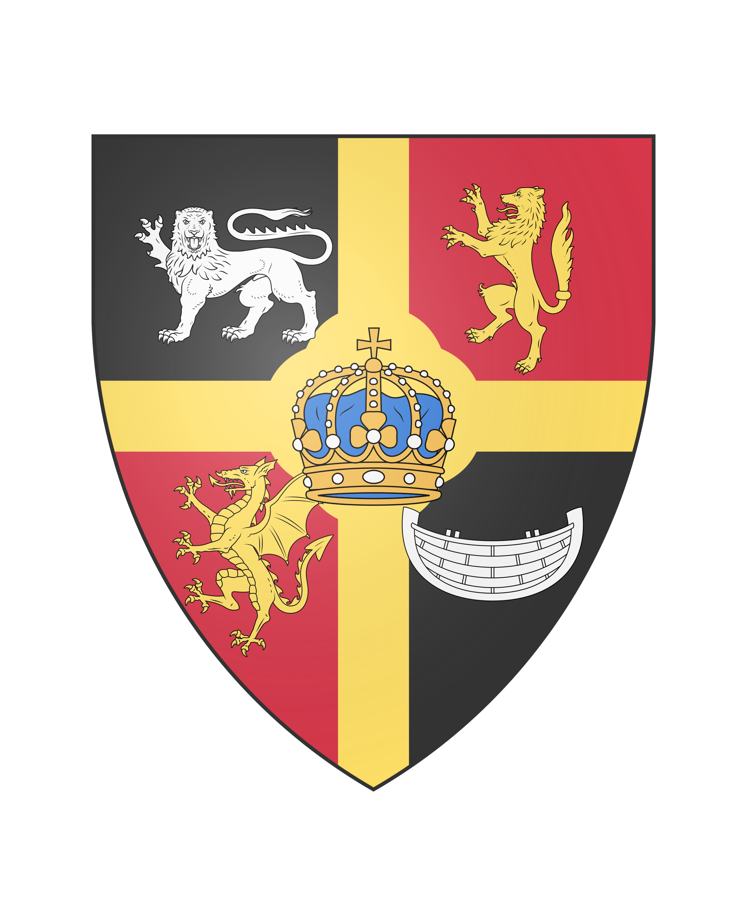

Ard Cóiced Síogaithe
The Coat of Arms
This was purely because I had too much time on my hands and found a site during my breaks when studying.
Badge

Governance
The Cóiceda
At the base of the High Kingdom are the Túatha or clans led by a Thegn or lord. Several of these Túatha are under a Tiarna (earl) or Ard Tiarna (duke). The first semi-sovereign division is made into the different Cóiceda or Kingdoms ruled by a Rí or King, there are currently 5 and they are as follows:
- Cóiced Bithoiris or the Kingdom of Evermeet, located in the far north. Only a few enter the sacred ground of this kingdom that was once part of Arvandor, the realm of Corellon.
- Cóiced Edhollond or the Kingdom of Edhollond, the largest and most powerful kingdom. Most High Kings come from this Kingdom, as does the current High King and Tánaiste (heir to the throne)
- Cóiced Lórinand or Kingdom of Lórinand, the smallest kingdom. Its inhabitants are good seafarers and provide most of the High Kingdom's trading and warships. Their culture is a melting pot of the elves that live further north and the maritime culture of the Southern Coast
- Cóiced Doriath or Kingdom of Doriath, the land of the craftsmen. It is home to most of the craftsmen who make all of the items that are used and traded throughout the High Kingdom.
- Cóiced Baerncar or Kingdom of Baerncar is the least centralised of all the Kingdoms and home to the wood elves. Baerncar is where the traditional Túatha culture is most prevalent. It is a very unsettled area, and there is still a group of guerrillas who want independence. Compare Baerncar with the Ireland of the High Kingdom.
In addition, there is also the Flaitheas (or principality) of Liège where the heir to the throne or Tánaiste Prince Nórimion of Liège rules.
The Estates-General
The Estates-General used to be one of the most powerful institutions of the High Kingdom but has now been reduced to a de facto advisory body, it can still vote on laws but these are now no more than advice for the High King. The Estates-General consists of 2 councils and 1 chamber, only when a proposal is confirmed by all three a proposal is put before the High King who can approve it or not as he wishes.
The Council of Counts
In this council all Tiarna, the Ard Tiarna and the Tánaiste sit. In this council, the bills of the Chamber of Tribunes are discussed and voted on, but most are simply voted down because, according to the council, they undermine the authority of the nobility too much. The chairman is Duke-Marshal Albert Toussaint de Chatellereau, the Ard Tiarna of Chatellereau.
The Council of Magisters
This is the council of the clergy and magicians of the realm, the magisters or master of each magic school and monastery has a seat there. Here too, there is usually opposition to the bills of the Chamber of Tribunes, this time because the gods would not be respected. The chairman is the High Magister who is appointed by the High King for life.
The Chamber of Tribunes
The only democratically elected and also least useful part of the States-General, not because the Tribunes do not try - they have been trying to implement certain reforms for centuries - but because the two councils do not agree with them. Every 20 years new tribunes are elected, both in the various Cóiceda and in some protectorates. This of course has the problem that for some races that do not live as long, they effectively get less representation due to the long term of election. Unlike the two councils, the Chamber is open to all inhabitants of a Cóiced or the protectorates that have been granted this right, in practice these are usually wealthy citizens who are not of noble birth. The chairman of the Chamber is Louis De Potter, an elderly Tribune from Lórinand.
The Council of Kings
This is the body where the next Ard Rí and Tánaiste are elected. The members of this council are the Ríg of the various Cóiceda.